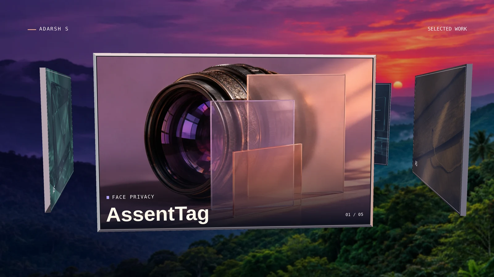
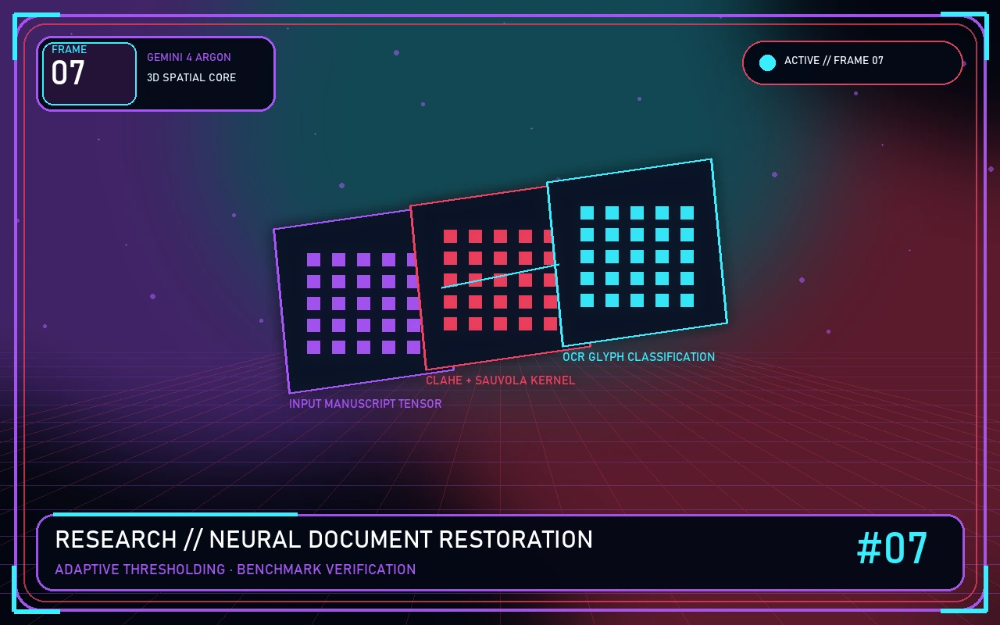

Face privacy
AssentTag
A photo-sharing application that verifies identity and blurs other faces in a shared photo.
Python · Django · OpenCV · Dlib · MySQL
ADARSH S / SOFTWARE ENGINEER
I’m Adarsh, a software engineer in Kerala building full-stack applications and computer vision systems.
 Meet Adarsh ↗
Meet Adarsh ↗

4K FILM / 00:15Play the reelPROJECT INDEX
Five projects across software, privacy engineering and applied AI.
Showing 5 of 5 projects.
Face privacy
A photo-sharing application that verifies identity and blurs other faces in a shared photo.
Python · Django · OpenCV · Dlib · MySQL

Computer vision
An OCR research pipeline for restoring and reading degraded Malayalam palm-leaf manuscripts.
Python · OpenCV · NumPy · Sauvola · Segmentation
Full-stack development
A note-sharing app with revocable links and database-enforced one-time access.
Next.js · TypeScript · Hono · Prisma · PostgreSQL
Security engineering
A source review toolkit that packages findings with verifiable evidence.
Python · Static analysis · SHA-256 · Merkle trees

Ledger research
An experimental auditor for covenant rules in Bitcoin off-chain transactions.
JavaScript · HTML / CSS · Bitcoin L2 · Taproot
No projects match your search.
PORTFOLIO FILM
Two short films explore project artwork and Kerala landscapes through a moving 3D camera.
AI-generated imagery, animated with a virtual camera.
About me
I’m Adarsh, a software engineer from Kozhikode, Kerala.
I build software that protects people’s privacy and helps make handwritten records readable. My work brings together Django backends, React interfaces and computer vision.
I completed my Master of Computer Applications at Government Engineering College, Thrissur in 2026.


Research publication
Reading the handwriting in historical palm-leaf manuscripts.
My research explores how computer vision can restore, authenticate and transcribe degraded manuscripts.
EpigraphiX-AI: Neural Epigraphical OCR, Topological Binarization, Strict Manuscript Authentication, and Multi-Model Intelligence for Degraded Historical Palm-Leaf Manuscripts
Adarsh S · IJRASET · Volume 14, Issue VIII · August 2026
DOI 10.22214/ijraset.2026.84707

Experience
My work across backend development, frontend engineering and DevOps.
 Dec 2025 – Mar 2026
Bluegen Solutions
Software Development Intern
Dec 2025 – Mar 2026
Bluegen Solutions
Software Development Intern
Kozhikode, Kerala · On-site
 Feb 2026 – Mar 2026
The Skybrisk
React.js Development Intern
Feb 2026 – Mar 2026
The Skybrisk
React.js Development Intern
Remote
 Feb 2026 – Mar 2026
CODTECH IT Solutions
DevOps Intern
Feb 2026 – Mar 2026
CODTECH IT Solutions
DevOps Intern
Remote
Skills
Academic background


Biology Stream · Government Higher Secondary School, Thamarassery

MGM Higher Secondary School, Engapuzha
Continuous learning

AWS

TCS iON
Cisco Networking Academy

Skill India Digital Hub

Deloitte

Simplilearn
Simplilearn
Simplilearn

NPTEL, IIT

HackerRank

IBM

ScholarHat
ScholarHat
Simplilearn

Fireflies

Contact
Have a software engineering, full-stack or AI opportunity? I’d love to hear about it.
oyadarsh@gmail.com